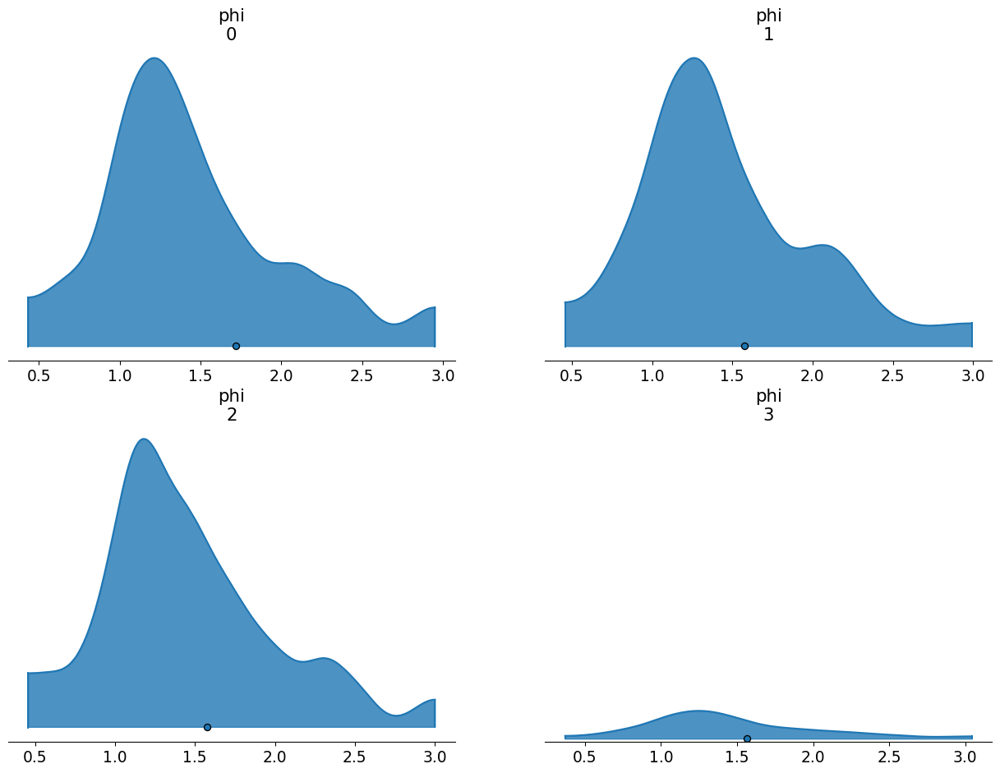

with pm.Model() as m0:
sigma = pm.Gamma('sigma',mu=1.0,sigma=1.0)
phi = pm.LogNormal('phi',mu=1.0,sigma=sigma)
compiled_model = nutpie.compile_pymc_model(m0)
t0 = nutpie.sample(
compiled_model,
chains=4,
tune=1000,
draws=1000,
progress_bar=False,
seed=seed,
)A positive constrained hierarchical prior that sparks joy
They make sampling an MMM so much more delightful.
I’ve always found it frustrating to work with positive constrained parameters. Bayesians love to make hierarchical models out of everything. We cannot help ourselves. But with hierarchical positive-constrained priors, there are two main problems:
1. They can funnel just like hierarchical normals
Here’s a simple case. If you have a variance parameter inside some group-level parameter, the prior geometry will be a funnel. It is the same mechanism that generates the funnel shape in normal priors. Sampling will be very inefficient and biased.

2. Parameterizing in log space makes it hard to control the mean and variance of your distribution
One strategy is to just work in log space. There, you can build a normal model that is unconstrained. This gives you access to familiar reparameterization techniques like non-centering. Then you exponential transform everything to enforce the positivity constraint. Divergences are virtually eliminated.
mu = 1
with pm.Model() as m1:
sigma = pm.Gamma('sigma',mu=1,sigma=1)
# non-centered trick
log_phi_z = pm.Normal("phi_offset",mu=0,sigma=1)
log_phi = mu + log_phi_z * sigma
# make it positive
phi = pm.Deterministic("phi",pm.math.exp(log_phi))
compiled_model = nutpie.compile_pymc_model(m1)
t1 = nutpie.sample(
compiled_model,
chains=4,
tune=1000,
draws=1000,
progress_bar=False,
seed=seed,
)
The problem is that we quickly lose control over the mean and variance. The exponential transform introduces a very long tail behaviour which blows the distribution up. Check out that mean and standard deviation:
| mean | sd | hdi_3% | hdi_97% | |
|---|---|---|---|---|
| phi | 31.774 | 502.444 | 0.0 | 15.74 |
The class
One can easily get lost trying to guess how to generate the desired distribution in the positive space. A tempting line of thinking is that you can just take the log of your desired mean and variance and then pass those to the normal.
Taking the logs or any number of other heuristic approaches runs into two main problems:
Applying exponentiation will entangle a distribution’s mean and variance. If the mean gets larger, so does the variance. If the variance gets larger, so does the mean. So your distribution will have some huge values in its typical set. If you run away from those huge values by reducing the mean and variance, you’ll get a distribution tightly bunched around 0. This will probably be too strongly informative to recover the values you are interested in.
Even if you can get the mean that you want, we aren’t working with a single value here. We have a distribution of parameters. We’d also need to find a way to make sure our distribution is well-behaved for all parameters in the typical set of our hyperparameters.
The modeler who operates on vibes is not prepared to handle the mystical transformative powers of exponentiation. Wikipedia, however, operates on the wisdom of generations and offers a path through the mists. To generate a log-normal distribution with our desired mean (\(\mu_{X}\)) and variance (\(\sigma_{X}^2\)), we have these formulae:
\[\mu = \ln(\frac{\mu_{X}^2}{\sqrt{\mu_{X}^2 + \sigma_{X}^2}})\]
\[\sigma^2 = \ln(1 + \frac{\sigma_{X}^2}{\mu_{X}^2})\]
If we put these formulae inside a pymc model, we can make the appropriate correction for every combination of hyperparameters. Then we can pass the corrected parameters to a standard non-centered normal distribution and exponentiate the result. It is the best of both worlds - control over the mean and variance while also getting to toggle between centered and non-centered. Here’s a class, in the style of the Prior class, that implements this approach.
from pytensor.tensor import TensorVariable
from pymc_extras.prior import create_dim_handler
class LogNormalExp:
def __init__(self, dims: tuple | None = None, centered: bool = True, **parameters):
self.parameters = parameters
self.dims = dims
self.centered = centered
def _create_parameter(self, param, value, name):
if not hasattr(value, "create_variable"):
return value
child_name = f"{name}_{param}"
return self.dim_handler(value.create_variable(child_name), value.dims)
def create_variable(self, name: str) -> TensorVariable:
self.dim_handler = create_dim_handler(self.dims)
parameters = {
param: self._create_parameter(param, value, name)
for param, value in self.parameters.items()
}
# transformation trick to constrain the mu and sigma
mu_log = pt.log(
parameters['mu']**2 / pt.sqrt(parameters['mu']**2 + parameters['sigma']**2)
)
sigma_log = pt.sqrt(
pt.log(1 + (parameters['sigma']**2 / parameters['mu']**2))
)
if self.centered:
log_phi = pm.Normal(
name+ "_log",
mu=mu_log,
sigma=sigma_log,
dims=self.dims
)
else:
log_phi_z = pm.Normal(
name + "_log" + "_offset",
mu=0,
sigma=1,
dims=self.dims)
log_phi = mu_log + log_phi_z * sigma_log
phi = pm.math.exp(log_phi)
phi = pm.Deterministic(name, phi, dims=self.dims)
return phi
def to_dict(self):
"""
"""
data = {
"dist": "LogNormalExp",
}
if self.parameters:
def handle_value(value):
if isinstance(value, Prior):
return value.to_dict()
if isinstance(value, pt.TensorVariable):
value = value.eval()
if isinstance(value, np.ndarray):
return value.tolist()
if hasattr(value, "to_dict"):
return value.to_dict()
return value
data["kwargs"] = {
param: handle_value(value) for param, value in self.parameters.items()
}
if not self.centered:
data["centered"] = False
if self.dims:
data["dims"] = self.dims
return dataBenefits of the class over alternatives
I just want to explore one more approach that doesn’t work because it makes it vivid just how effective the class above really is. You might be tempted to take the desired mean and standard, push them through the formulae, and then build your hyperparameters around the desired values. Suppose you want a hierarchical model where group-level parameters have a mean of 1.5 and a standard deviation of 0.5. One option is:
desired_mean = 1.5
desired_std = 0.5
mu_log = np.log(desired_mean**2 / np.sqrt(desired_mean**2 + desired_std**2))
sigma_log = np.sqrt(np.log(1 + (desired_std**2 / desired_mean**2)))
mu_log, sigma_log(np.float64(0.3527848502792511), np.float64(0.32459284597450133))coords ={
"groups": np.arange(4)
}
with pm.Model(coords=coords) as model_standard:
mu = pm.Gamma("mu", mu=mu_log, sigma=0.25)
sigma = pm.Gamma("sigma", mu=sigma_log, sigma=0.25)
log_phi = pm.Normal("log_phi", mu=mu, sigma=sigma, dims="groups")
phi = pm.Deterministic("phi", pt.exp(log_phi))
prior = pm.sample_prior_predictive(random_seed=seed)
az.plot_density(
prior.prior,
grid=(2,2),
var_names=["phi"],
shade=0.8
)
plt.ylim(-0.1,10);Sampling: [log_phi, mu, sigma]
You’ll notice that the means of these the prior samples are slightly above the desired value (1.5). Meanwhile, if we look at the summary, you’ll notice that the standard deviations are much higher than the desired value. This arises because we’ve only been able to partially apply the transformation we need. We took the expected value of the hyperparameters and ensured those work out. But we have no guarantee that values further away from the expected value will map to the correct place in log space. So we get an inflation of the variances.
| mean | sd | hdi_3% | hdi_97% | |
|---|---|---|---|---|
| phi[0] | 1.719 | 4.513 | 0.431 | 2.953 |
| phi[1] | 1.575 | 0.907 | 0.456 | 2.994 |
| phi[2] | 1.576 | 0.795 | 0.454 | 3.004 |
| phi[3] | 1.566 | 0.762 | 0.367 | 3.046 |
By contrast, if we use the internal transformation, we apply the same transform to every value of the hyperparameters, expected or not. You’ll notice that the standard deviation and mean adhere very closely to our desired values.
coords ={
"groups": np.arange(4)
}
with pm.Model(coords=coords) as model_special:
mu = pm.Gamma("mu", mu=desired_mean, sigma=0.25)
sigma = pm.Gamma("sigma", mu=desired_std, sigma=0.25)
phi = LogNormalExp(mu=mu, sigma=sigma, dims="groups").create_variable("phi")
prior = pm.sample_prior_predictive(random_seed=seed)
az.plot_density(
prior.prior,
grid=(2,2),
var_names=["phi"],
shade=0.8
);Sampling: [mu, phi_log, sigma]
| mean | sd | hdi_3% | hdi_97% | |
|---|---|---|---|---|
| phi[0] | 1.487 | 0.659 | 0.359 | 2.367 |
| phi[1] | 1.471 | 0.548 | 0.431 | 2.357 |
| phi[2] | 1.481 | 0.559 | 0.510 | 2.578 |
| phi[3] | 1.499 | 0.574 | 0.483 | 2.604 |
Application in MMMs
This prior really shines in MMMs. They have positive constrained parameters (efficiency and saturation can both take on only positive values). They also really need non-centered parameterizations. The rule of thumb is that non-centered priors work better when the information in the data is limited. In real-world marketing data, we typically learn a lot about the saturation point (because the company is overspending on media) or we learn a lot about the efficiency (because the company is underspending on media) but not both. So if we have hierarchical parameters on both types of parameters, at least one of them will want a non-centered prior.
In the current (or forthcoming, depending on when you are reading this), hierarchical model in pymc-marketing examples, we use the naive exponentiated non-centered normal distribution to solve that problem.
The example looks pretty clean because I worked really hard on it1. But it was quite difficult to fit. One problem with the long-tailedness of the naive approach is that it introduces a sort of multi-modal behaviour. If you have consistent marketing over time and you move beta up, the average sales over time goes up. But average sales over time is what the intercept is supposed to represent. So your model will be overparameterized with respect to the average sales over time. Sometimes you can solve this sort of problem by partially fixing each of those parameters. Maybe you know average sales should be 1000 and a media channel contributes, at most, 200 daily sales. This sort of prior information can break the interaction between the two parameters. But it requires you to have a fair bit of control over the parameters. In the long-tailed case, you don’t have much control over them because your prior ensures you will explore some unusual beta values. When the sampler jumps into the beta heavens, the curvature of the parameter space can shift abruptly for all parameters, HMC’s step size will not be tuned for this rough patch, and it will register as a divergence.
Let’s redo the model from the examples and you can see how smooth this prior can be. Here’s what sampling looks like with the new prior.
beta_prior_log_normal_exp = LogNormalExp(
mu=Prior("Gamma", mu=0.25, sigma=0.10, dims=("channel")),
sigma=Prior("Exponential", scale=0.10, dims=("channel")),
dims=("channel", "geo"),
centered=False,
)
build_and_fit(beta_prior=beta_prior_log_normal_exp)Sampler Progress
Total Chains: 6
Active Chains: 0
Finished Chains: 6
Sampling for 32 seconds
Estimated Time to Completion: now
| Progress | Draws | Divergences | Step Size | Gradients/Draw |
|---|---|---|---|---|
| 2000 | 2 | 0.22 | 31 | |
| 2000 | 0 | 0.24 | 31 | |
| 2000 | 0 | 0.22 | 31 | |
| 2000 | 0 | 0.23 | 47 | |
| 2000 | 0 | 0.21 | 63 | |
| 2000 | 0 | 0.22 | 63 |
Here’s the old priors for comparison. They are clearly worse - more divergences, smaller step sizes, longer sampling times. The multi-modality doesn’t go away entirely. It is just a part of the parameter space in MMMs after all. But you start out on better footing when using the new prior and ticking up the target accept will remove those final divergences.
beta_prior = Prior(
"Normal",
mu=Prior("Normal", mu=-1.5, sigma=0.5, dims=("channel")),
sigma=Prior("Exponential", scale=0.25, dims=("channel")),
dims=("channel", "geo"),
transform="exp",
centered=False,
)
build_and_fit(beta_prior=beta_prior)Sampler Progress
Total Chains: 6
Active Chains: 0
Finished Chains: 6
Sampling for 36 seconds
Estimated Time to Completion: now
| Progress | Draws | Divergences | Step Size | Gradients/Draw |
|---|---|---|---|---|
| 2000 | 7 | 0.21 | 63 | |
| 2000 | 1 | 0.17 | 31 | |
| 2000 | 1 | 0.20 | 63 | |
| 2000 | 3 | 0.21 | 31 | |
| 2000 | 4 | 0.20 | 15 | |
| 2000 | 63 | 0.17 | 31 |
Footnotes
Farmed random seeds to get synthetic data that was easy + cranked the
target_acceptway up, both practices I’m not proud of.↩︎